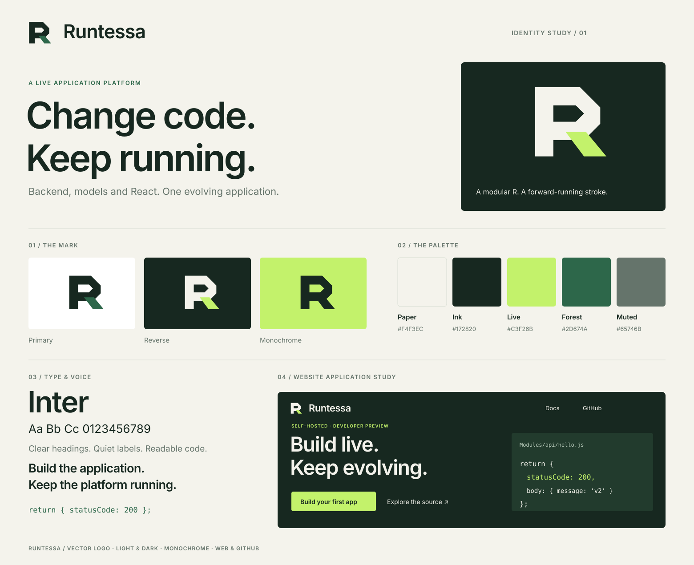

Logo, palette, typography and application studies.

Custom vector artwork follows the repository license. Inter is distributed under the SIL Open Font License; see font license. Website panels are design studies.